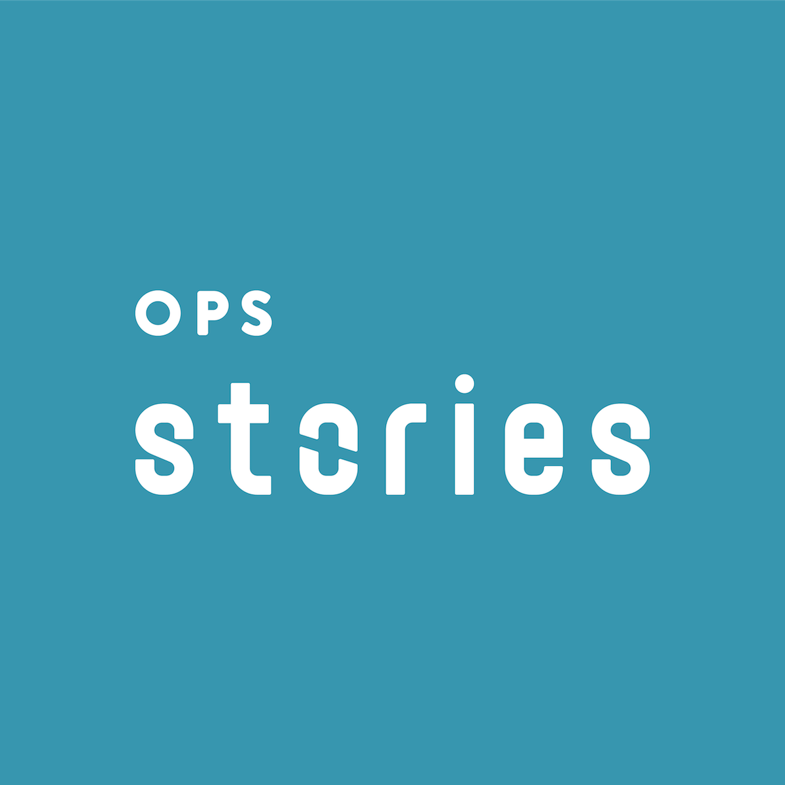

Ops Stories
Who are we?
The community for operations folks in startups and scaleups.
Started in March 2018, we are now 200+ people with “Operations” in our titles. We learn from each other by discussing challenges and sharing stories, experiences, and advice. Most importantly, we help each other be more effective and grow in our roles.
Ops Stories is your space to share experience and advice, ask/answer questions, grow professionally and expand your network online and offline.
Where are we?
Most of our members are in London, UK but the world is our oyster 🙂 and we reach as far as the USA, Spain, The Netherlands, Lithuania, Malaysia and Australia.
Who runs Ops Stories?
Ops Stories was created in March 2018 by Aušrinė Keršanskaitė and Astrid Verstraete (Co-Founders @ Operations Nation) because we have a big passion for ops.
Seeing people thrive in their roles and achieve efficiency for their companies is what motivates us to keep giving 100% to the community and its growth. We want to keep it relevant so “quality over quantity” is our motto every step of the way.
Ops Stories Core Team consists of:
- Laura Parker (Product Manager @ eConsult Health, formerly Head of Strategy & Operations @ GTN), owner of Ops Stories Book Club.
- Penny Penati (Chief of Staff @ Laka), owner of Ops Stories Blog.
- Ania Futrzyk (Customer Operations Manager @ Trust Keith), owner of Ops Stories Customer Operations chapter.
How can you get involved?
If you know someone who’s already a part of Ops Stories and can vouch for you, ask them to introduce you to us.
Otherwise, drop us a line at hello@opsstories.com briefly introducing yourself and tell us why you’d like to join Ops Stories.
We schedule a 30-minute chat with everyone who’s looking to join our community. It’s an opportunity for you to ask us any questions you might have, and for us to learn more about you, your role and current challenges, as well as why you wish to join our community and what you can contribute to it.
You can also follow us on LinkedIn (we mostly share our members’ content) and read our blog.
How does Ops Stories community work?
- We communicate over Slack (mainly) and Google Groups (occasionally).
- Our backbone are the roundtables that are facilitated by our members.
- We share any relevant notes taken during our events for future reference.
- We support our member-led initiatives. That’s how Ops Stories Book Club and Ops Stories Blog were born, and many member-led roundtables organised.
- We organise informal socials and encourage 1-2-1s to ensure that everyone gets to know each other and promote open conversations.
What do we expect from our members?
Ops Stories members make the community greater than the sum of its parts when they actively engage in conversation and help each other!
- Attend the occasional social. Getting to know the other members will allow you to get more out of the community on a personal and professional level.
- Suggest a roundtable topic. Each conversation is beneficial to all of our members. Don’t be shy and speak up, we’ll help you organise it. You don’t need to be the subject expert, just bring the questions to fuel the conversation.
- Connect with people. Set up a 1-2-1 to discuss common challenges.
- Respect each other. Everyone is at a different stage of their ops career, but no question is more or less valuable. Sharing knowledge and paying it forward is how we can make ops shine in all companies, not just our own.
- Commit to being part of this community. Value that you’re a part of a group of likeminded people and don’t forget to give back.
- Don’t indulge in self-promotion.
Finally, we want to give a big shout out to COO Stories, the first Stories community. Their support has allowed Ops Stories to get to where we are now.
Also, Ops Stories wouldn’t be what it is without our members. They inspire us as organisers to do better, push forward, and grow in the best way possible. Seeing that Ops Stories is an asset in their professional development is all we need to keep going.